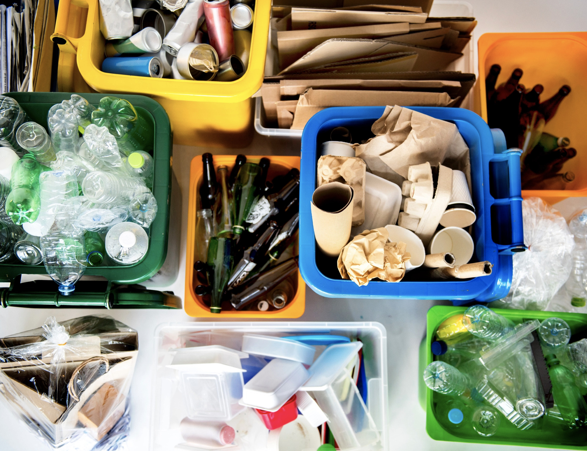
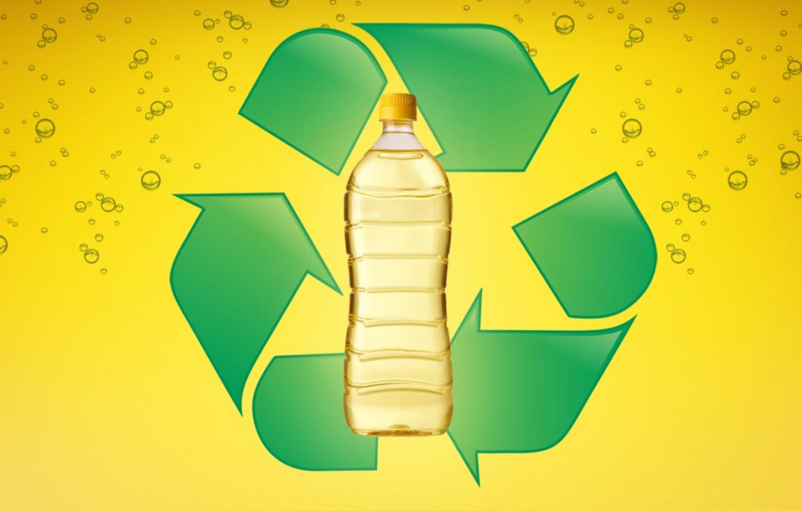
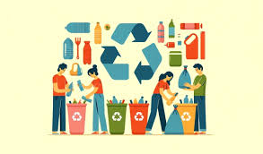

Separando o Lixo: Sólidos e Líquidos, um Guia Completo para Reciclar em São Paulo!
Você já sabe que separar o lixo em casa é fundamental para um futuro mais sustentável. Mas sabia que além dos materiais sólidos, como papel, plástico e vidro, também podemos reciclar alguns tipos de líquidos? Neste guia completo, vamos te mostrar a importância de separar tanto os resíduos sólidos quanto os líquidos e como você pode fazer isso na sua casa.
Por que separar o lixo?
- Menos lixo nos aterros: Ao separar o lixo reciclável, diminuímos a quantidade de lixo que vai para os aterros sanitários, liberando menos gases do efeito estufa.
- Conservação de recursos naturais: A reciclagem economiza água, energia e matéria-prima, reduzindo o impacto ambiental da produção de novos produtos.
- Geração de empregos: A coleta seletiva gera muitos empregos, principalmente para as cooperativas de catadores.
- Cidade mais limpa e saudável: Com menos lixo nas ruas e uma gestão adequada dos resíduos, a cidade fica mais limpa e saudável para todos.
Separando os sólidos
Os materiais sólidos mais comuns para reciclagem são:
- Papel: jornais, revistas, cadernos, embalagens de papelão.
- Plástico: garrafas PET, embalagens de alimentos, sacolas plásticas.
- Metal: latas de alumínio, latas de aço, embalagens de metal.
- Vidro: garrafas, potes de vidro, embalagens de vidro.
Separando os líquidos
Alguns líquidos também podem ser reciclados, como:
- Óleo de cozinha: O óleo de cozinha usado pode ser transformado em biodiesel ou sabão.
- Tintas: Tintas à base de água podem ser reaproveitadas em alguns casos.
- Pilhas e baterias: Pilhas e baterias devem ser descartadas em locais específicos, pois contêm metais pesados que podem contaminar o solo e a água.
Onde descartar os resíduos sólidos e líquidos em São Paulo?
- Coleta seletiva domiciliar: Muitas regiões de São Paulo já contam com a coleta seletiva na porta de casa. É só separar o lixo reciclável e deixar nos recipientes indicados.
- Pontos de entrega voluntária (PEVs): Em diversos locais da cidade, como parques e praças, existem PEVs onde você pode levar seus materiais recicláveis, incluindo óleo de cozinha e pilhas.
- Ecopontos: Os ecopontos são locais onde a população pode levar diversos tipos de resíduos, como móveis, eletrônicos e óleo de cozinha.
Como reciclar cada tipo de material:
- Sólidos: Lave bem as embalagens antes de descartar. Separe os materiais por tipo (papel, plástico, metal, vidro).
- Óleo de cozinha: Deixe o óleo esfriar e coloque-o em uma garrafa PET limpa. Leve para um ponto de coleta.
- Tintas: Verifique se a tinta está em bom estado e se pode ser reaproveitada. Caso contrário, procure um local de descarte adequado.
- Pilhas e baterias: Leve-as para locais específicos de coleta, como lojas de eletrônicos ou postos de coleta.
Separar o lixo é um hábito simples que faz uma grande diferença para o meio ambiente e para a nossa cidade. Ao reciclar tanto os resíduos sólidos quanto os líquidos, você está contribuindo para um futuro mais sustentável para as próximas gerações.